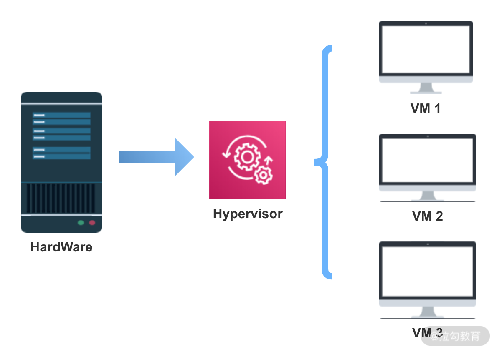
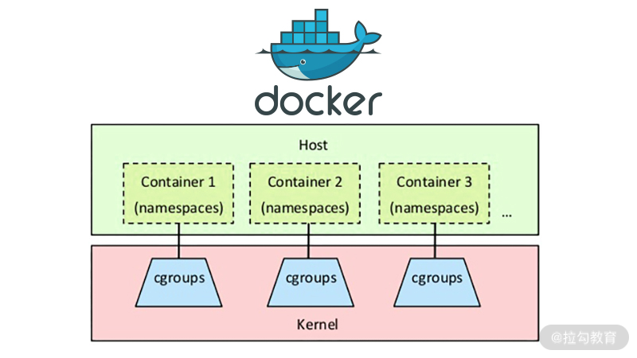

- 00 开篇词：搭建分布式知识体系，挑战高薪 Offer.md
- 01 如何证明分布式系统的 CAP 理论？.md
- 02 不同数据一致性模型有哪些应用？.md
- 03 如何透彻理解 Paxos 算法？.md
- 04 ZooKeeper 如何保证数据一致性？.md
- 05 共识问题：区块链如何确认记账权？.md
- 06 如何准备一线互联网公司面试？.md
- 07 分布式事务有哪些解决方案？.md
- 08 对比两阶段提交，三阶段协议有哪些改进？.md
- 09 MySQL 数据库如何实现 XA 规范？.md
- 10 如何在业务中体现 TCC 事务模型？.md
- 11 分布式锁有哪些应用场景和实现？.md
- 12 如何使用 Redis 快速实现分布式锁？.md
- 13 分布式事务考点梳理 + 高频面试题.md
- 14 如何理解 RPC 远程服务调用？.md
- 15 为什么微服务需要 API 网关？.md
- 16 如何实现服务注册与发现？.md
- 17 如何实现分布式调用跟踪？.md
- 18 分布式下如何实现配置管理？.md
- 19 容器化升级对服务有哪些影响？.md
- 20 ServiceMesh：服务网格有哪些应用？.md
- 21 Dubbo vs Spring Cloud：两大技术栈如何选型？.md
- 22 分布式服务考点梳理 + 高频面试题.md
- 23 读写分离如何在业务中落地？.md
- 24 为什么需要分库分表，如何实现？.md
- 25 存储拆分后，如何解决唯一主键问题？.md
- 26 分库分表以后，如何实现扩容？.md
- 27 NoSQL 数据库有哪些典型应用？.md
- 28 ElasticSearch 是如何建立索引的？.md
- 29 分布式存储考点梳理 + 高频面试题.md
- 30 消息队列有哪些应用场景？.md
- 31 集群消费和广播消费有什么区别？.md
- 32 业务上需要顺序消费，怎么保证时序性？.md
- 33 消息幂等：如何保证消息不被重复消费？.md
- 34 高可用：如何实现消息队列的 HA？.md
- 35 消息队列选型：Kafka 如何实现高性能？.md
- 36 消息队列选型：RocketMQ 适用哪些场景？.md
- 37 消息队列考点梳理 + 高频面试题.md
- 38 不止业务缓存，分布式系统中还有哪些缓存？.md
- 39 如何避免缓存穿透、缓存击穿、缓存雪崩？.md
- 40 经典问题：先更新数据库，还是先更新缓存？.md
- 41 失效策略：缓存过期都有哪些策略？.md
- 42 负载均衡：一致性哈希解决了哪些问题？.md
- 43 缓存高可用：缓存如何保证高可用？.md
- 44 分布式缓存考点梳理 + 高频面试题.md
- 45 从双十一看高可用的保障方式.md
- 46 高并发场景下如何实现系统限流？.md
- 47 降级和熔断：如何增强服务稳定性？.md
- 48 如何选择适合业务的负载均衡策略？.md
- 49 线上服务有哪些稳定性指标？.md
- 50 分布式下有哪些好用的监控组件？.md
- 51 分布式下如何实现统一日志系统？.md
- 52 分布式路漫漫，厚积薄发才是王道.md
19 容器化升级对服务有哪些影响？
容器技术是近几年计算机领域的热门技术，特别是随着各种云服务的发展，越来越多的服务运行在以 Docker 为代表的容器之内。
这一课时我们就来分享一下容器化技术相关的知识。
容器化技术简介
相比传统虚拟化技术，容器技术是一种更加轻量级的操作系统隔离方案，可以将应用程序及其运行依赖环境打包到镜像中，通过容器引擎进行调度，并且提供进程隔离和资源限制的运行环境。
虚拟化技术
虚拟化技术通过 Hypervisor 实现虚拟机与底层硬件的解耦，虚拟机实现依赖 Hypervisor 层，Hypervisor 是整个虚拟机的核心所在。
Hypervisor 是什么呢 ? 也可以叫作虚拟机监视器 VMM（Virtual Machine Monitor），是一种运行在基础物理服务器和操作系统之间的中间软件层，可允许多个操作系统和应用共享硬件。

Hypervisor 虚拟机可以模拟机器硬件资源，协调虚拟机对硬件资源的访问，同时在各个虚拟机之间进行隔离。
每一个虚拟机都包括执行的应用，依赖的二进制和库资源，以及一个完整的 OS 操作系统，虚拟机运行以后，预分配给它的资源将全部被占用。
容器化技术
在容器技术中，最具代表性且应用最广泛的是 Docker 技术。
Docker 是一个开源的应用容器引擎，可以打包应用以及依赖包到一个可移植的容器中，然后发布到服务器上，Docker 容器基于镜像运行，可部署在物理机或虚拟机上，通过容器引擎与容器编排调度平台实现容器化应用的生命周期管理。
使用容器化技术有哪些好处呢？
Docker 不同于 VM，只包含应用程序及依赖库，处于一个隔离的环境中，这使得 Docker 更加轻量高效，启动容器只需几秒钟之内完成。由于 Docker 轻量、资源占用少，可以更方便地部署标准化应用，一台主机上可以同时运行上千个 Docker 容器。
两种虚拟化技术的对比
虚拟机是一个运行在宿主机之上的完整操作系统，虚拟机运行自身操作系统会占用较多的 CPU、内存、硬盘资源等。
虚拟化技术为用户提供了一个完整的虚拟机，包括操作系统在内，容器化技术为应用程序提供了隔离的运行空间，容器之间共享同一个上层操作系统内核。虚拟化技术有更佳的隔离性和安全性，但是更新和升级困难，容器化具有快速扩展、灵活性和易用性等优势，但其隔离性较差、安全性相对较低。
实际部署一般是把两种技术结合起来，比如一个虚拟机中运行多个容器，这样既保证了较好的强隔离性和安全性，也有了快速扩展、灵活性和易用性。
容器化的原理
容器技术的核心是如何实现容器内资源的限制，以及不同容器之间的隔离，这些是基于 Linux 的 Namespace 和 CGroups 技术。

Namespace
Namespace 的目的是通过抽象方法使得 Namespace 中的进程看起来拥有它们自己的隔离的全局系统资源实例。 Linux 内核实现了六种 Namespace：Mount namespaces、UTS namespaces、IPC namespaces、PID namespaces、Network namespaces、User namespaces，功能分别为：隔离文件系统、定义 hostname 和 domainame、特定的进程间通信资源、独立进程 ID 结构、独立网络设备、用户和组 ID 空间。
Docker 在创建一个容器的时候，会创建以上六种 Namespace 实例，然后将隔离的系统资源放入到相应的 Namespace 中，使得每个容器只能看到自己独立的系统资源。
Cgroups
Docker 利用 CGroups 进行资源隔离。CGroups（Control Groups）也是 Linux 内核中提供的一种机制，它的功能主要是限制、记录、隔离进程所使用的物理资源，比如 CPU、Mermory、IO、Network 等。
简单来说，CGroups 在接收到调用时，会给指定的进程挂上钩子，这个钩子会在资源被使用的时候触发，触发时会根据资源的类别，比如 CPU、Mermory、IO 等，然后使用对应的方法进行限制。
CGroups 中有一个术语叫作 Subsystem 子系统，也就是一个资源调度控制器，CPU Subsystem 负责 CPU 的时间分配，Mermory Subsystem 负责 Mermory 的使用量等。Docker 启动一个容器后，会在 /sys/fs/cgroup 目录下生成带有此容器 ID 的文件夹，里面就是调用 CGroups 的配置文件，从而实现通过 CGroups 限制容器的资源使用率。
微服务如何适配容器化
微服务的设计思想是对系统功能进行解耦，拆分为单独的服务，可以独立运行，而容器进一步对这种解耦性进行了扩展，应用容器技术可以对服务进行快速水平扩展，从而到达弹性部署业务的能力。在各种云服务概念兴起之后，微服务结合 Docker 部署，更加方便微服务架构运维部署落地。
微服务结合容器有很多优点，但是另一方面，也给服务的部署和应用提出了一些新的问题。
以 Java 服务为例，容器与虚拟机不同，其资源限制通过 CGroup 来实现，而容器内部进程如果不感知 CGroup 的限制，就进行内存、CPU 分配的话，则可能会导致资源冲突的问题。
Java 8 之前的版本无法跟 Docker 很好的配合，JVM 通过容器获取的可用内存和 CPU 数量并不是 Docker 允许使用的可用内存和 CPU 数量。
我们在开发中会应用一些线程池，通常会根据 CPU 核心数来配置，比如使用：
Runtime.getRuntime().availableProcessors()
在 1.8 版本更早的实现，在容器内获取的是上层物理机或者虚拟机的 CPU 核心数，这就使得线程池配置不符合我们期望的设置。
另一个影响体现在 GC 中，JVM 垃圾对象回收对 Java 程序执行性能有一定的影响，默认的 JVM 使用公式“ParallelGCThreads = (ncpus <= 8) ? ncpus : 3 + ((ncpus * 5) / 8)” 来计算并行 GC 的线程数，其中 ncpus 是 JVM 发现的系统 CPU 个数。如果 JVM 应用了错误的 CPU 核心数，会导致 JVM 启动过多的 GC 线程，导致 GC 性能下降，Java 服务的延时增加。
总结
这一课时和你分享了容器技术的发展，以 Docker 为代表的容器化技术的实现原理，以及大规模容器化之下，微服务如何适配等问题。
本课时的内容以概念为主，如果你在工作中没有接触过容器化场景，可以到 Docker 官网学习入门指南、了解 Docker 命令，并动手实践一下 Docker 部署。
© 2019 - 2023 Liangliang Lee. Powered by gin and hexo-theme-book.